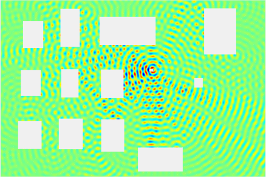

Mobile telephone signal propagation in a city is characterized by obstacles, such as buildings and cars, that attenuate, reflect, refract
and diffract
the signal. Should there be a pure line-of-sight from the transmitter to the receiver, the receiver will always receive a constant power from the transmitter conditioned that the transmitter stays at a constant distance from the receiver—this can be the case, for example, if you are transmitting to a near-by high base-station antenna. Without the line-of-sight component, the signal strength will vary according to Rayleigh fading
as the transmitter or the obstacles move. If only a limited line-of-sight element is present, the signal strength will follow Rician fading
statistics.
I animated a couple of GIFs to help us perceive what is happening. The first figure demonstrates how a simple sine signal propagates between buildings. You can observe how the multi-path components sum up to a signal amplifying in some locations and degenerating in others. In the first figure, you can look for Rician conditions (lower right) and Rayleigh conditions (lower left) and see how the signal behaves. The figure was obtained by solving the Helmholtz equation by finite element method.
The second figure shows how the aggregate signal power from many mobile transmitters develops in time under Rician fading conditions. The aggregate power can be considered as interference in a receiver. You can see how the high peaks of interference power emerge at random locations. These kinds of peaks can cause decreased data rates. The figure was obtained by simulating a random walk of points in a realization of the Poisson point process on a plane.
Figure:
The white boxes represent buildings, and the little white circle is the transmitter. One can see how reflections will cause the aggregate signal strength to fluctuate by location depending on the phases of the incoming reflected waves.
|  |
Figure:
The interference power field develops in time as the interfering transmitters are moving in random directions at each time step. Red color represents the highest mean power of interference, and deep blue represents the absence of any interference. We assume Rician fading. The interference in the red occurrences will reduce the performance remarkably.
 |
References: